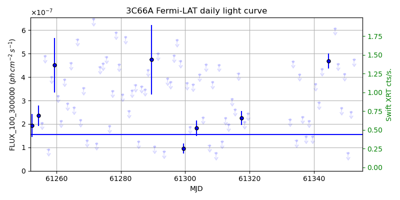
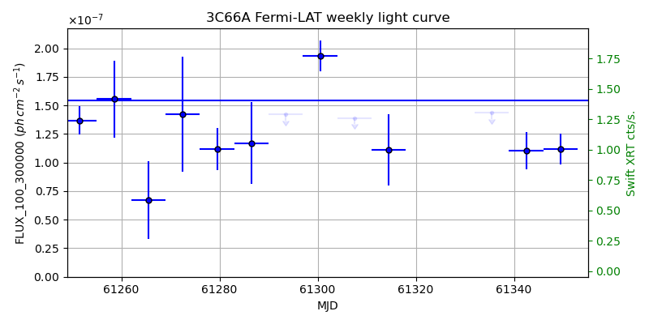
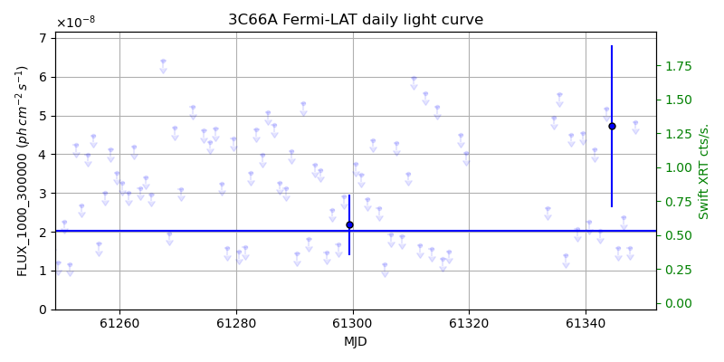
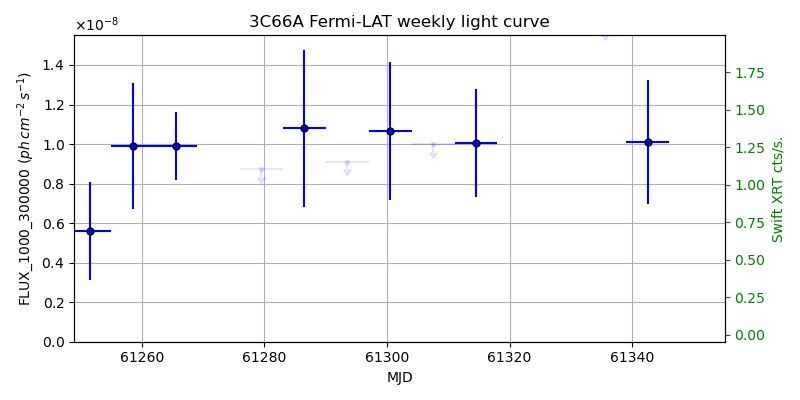

LAT Lightcurve site: https://fermi.gsfc.nasa.gov/ssc/data/access/lat/msl_lc/source/3C_66A
Swift site: https://www.swift.psu.edu/monitoring/source.php?source=3C66A
NED: Query
Time of last update of this page: UT: 2026-11-06 16:12 (MJD: 61350.675)
| Property | Value |
|---|---|
| R.A. | 2:22:39.60 |
| Dec. | 43:02:06.0 |
| z | 0.370 |
| 3FGL SpectrumType | LogParabola |
| 3FGL PL Index | |
| 3FGL Flux_100_300000 | 1.54e-07 1 / (s cm2) |
| 3FGL Flux_1000_300000 | 2.02e-08 1 / (s cm2) |
| 3FGL Flux >200 GeV | 9.90e-11 1 / (s cm2) |
| 3FGL Extrap. Crab >200 GeV | 0.42 |
| 3FGL Flux After EBL Absorption >200GeV | 2.24e-11 1 / (s cm2) |
| 3FGL EBL Crab Fraction >200GeV | 0.10 |

| MJD | dMJD | Flux | dFlux | Frac3FGL | FracCrab>200GeV | EBLFracCrab>200GeV |
|---|---|---|---|---|---|---|
| 61345.50 | 0.50 | 7.38e-07 | 0.00e+00 | 0.00 | 0.00 | 0.00 |
| 61346.50 | 0.50 | 6.08e-07 | 0.00e+00 | 0.00 | 0.00 | 0.00 |
| 61347.50 | 0.50 | 4.57e-07 | 0.00e+00 | 0.00 | 0.00 | 0.00 |
| 61348.50 | 0.50 | 2.68e-07 | 0.00e+00 | 0.00 | 0.00 | 0.00 |
| 61349.50 | 0.50 | 4.13e-07 | 0.00e+00 | 0.00 | 0.00 | 0.00 |

| MJD | dMJD | Flux | dFlux | Frac3FGL | FracCrab>200GeV | EBLFracCrab>200GeV |
|---|---|---|---|---|---|---|
| 61314.50 | 3.50 | 1.11e-07 | 3.11e-08 | 0.72 | 0.30 | 0.07 |
| 61321.50 | 3.50 | 2.38e-07 | 0.00e+00 | 0.00 | 0.00 | 0.00 |
| 61328.50 | 3.50 | 7.12e-07 | 0.00e+00 | 0.00 | 0.00 | 0.00 |
| 61335.50 | 3.50 | 1.44e-07 | 0.00e+00 | 0.00 | 0.00 | 0.00 |
| 61342.50 | 3.50 | 1.10e-07 | 1.61e-08 | 0.72 | 0.30 | 0.07 |

| MJD | dMJD | Flux | dFlux | Frac3FGL | FracCrab>200GeV | EBLFracCrab>200GeV |
|---|---|---|---|---|---|---|
| 61345.50 | 0.50 | 1.58e-08 | 0.00e+00 | 0.00 | 0.00 | 0.00 |
| 61346.50 | 0.50 | 2.37e-08 | 0.00e+00 | 0.00 | 0.00 | 0.00 |
| 61347.50 | 0.50 | 1.59e-08 | 0.00e+00 | 0.00 | 0.00 | 0.00 |
| 61348.50 | 0.50 | 4.83e-08 | 0.00e+00 | 0.00 | 0.00 | 0.00 |
| 61349.50 | 0.50 | 8.54e-08 | 0.00e+00 | 0.00 | 0.00 | 0.00 |

| MJD | dMJD | Flux | dFlux | Frac3FGL | FracCrab>200GeV | EBLFracCrab>200GeV |
|---|---|---|---|---|---|---|
| 61314.50 | 3.50 | 1.00e-08 | 2.72e-09 | 0.50 | 0.21 | 0.05 |
| 61321.50 | 3.50 | 2.00e-08 | 0.00e+00 | 0.00 | 0.00 | 0.00 |
| 61328.50 | 3.50 | 3.23e-08 | 0.00e+00 | 0.00 | 0.00 | 0.00 |
| 61335.50 | 3.50 | 1.59e-08 | 0.00e+00 | 0.00 | 0.00 | 0.00 |
| 61342.50 | 3.50 | 1.01e-08 | 3.14e-09 | 0.50 | 0.21 | 0.05 |
--------------------------------------------------------- Using user-supplied coords: 2:22:39.60 43:02:06.0 2000 --------------------------------------------------------- FLWO UT night of: 2026-11-07 Local Sid. @ Midnight: 02:42 Sunset (-15.0) (local, UT): 18:39 01:39 Sunrise (-15.0) (local, UT): 05:36 12:36 Moonrise (local, UT): 05:16 12:16 Moonset (local, UT): Moon phase: 0.04 --------------------------------------------------------- AzTime LSID UT Obj_el Obj_az Mn_el Mn_az Sep. --------------------------------------------------------- 18:39 21:20 01:39 30.6 55.3 -35.5 278.9 143.5 19:09 21:50 02:09 35.9 56.9 -41.6 283.5 143.7 19:39 22:20 02:39 41.3 58.1 -47.5 288.8 143.9 20:09 22:50 03:09 46.8 58.9 -53.3 295.3 144.1 20:39 23:20 03:39 52.3 58.9 -58.7 303.4 144.4 21:09 23:50 04:09 57.7 58.1 -63.5 313.9 144.6 21:39 00:20 04:39 63.1 55.9 -67.5 328.0 144.9 22:09 00:50 05:09 68.3 51.5 -70.0 346.2 145.1 22:39 01:20 05:39 73.0 43.0 -70.5 6.9 145.3 23:09 01:51 06:09 76.8 27.5 -68.8 26.6 145.6 23:39 02:21 06:39 78.5 3.0 -65.4 42.5 145.8 00:09 02:51 07:09 77.4 337.1 -60.9 54.4 146.0 00:39 03:21 07:39 73.9 319.6 -55.8 63.5 146.3 01:09 03:51 08:09 69.4 310.0 -50.2 70.6 146.5 01:39 04:21 08:39 64.3 304.8 -44.4 76.4 146.8 02:09 04:51 09:09 58.9 302.2 -38.4 81.4 147.0 02:39 05:21 09:39 53.5 301.2 -32.4 85.8 147.2 03:09 05:51 10:09 48.0 301.1 -26.3 89.9 147.4 03:39 06:21 10:39 42.5 301.7 -20.2 93.7 147.7 04:09 06:51 11:09 37.1 302.8 -14.2 97.5 147.9 04:39 07:21 11:39 31.8 304.3 -8.1 101.2 148.1 05:09 07:52 12:09 26.6 306.2 -1.2 105.0 148.3 05:36 08:19 12:36 21.9 308.2 3.4 108.6 148.5 --------------------------------------------------------- Dark hours >55 deg.: 5.61 srcstart (UT): 2026-11-07 03:53 srcend (UT): 2026-11-07 09:30